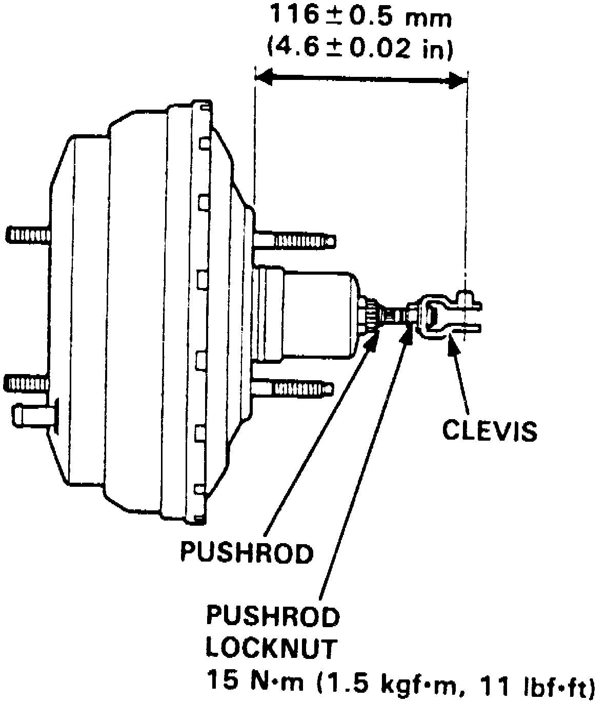

Operation CHARM
: Car repair manuals for everyone.
Home
>>
Acura
>>
1992
>>
Integra L4-1678cc 1.7L DOHC (VTEC) FI
>>
Repair and Diagnosis
>>
Specifications
>>
Mechanical Specifications
>>
Brake Master Cylinder
>>
Master Cylinder Push Rod
Master Cylinder Push Rod
Fig. 4 Booster Pushrod Length Adjustment:
